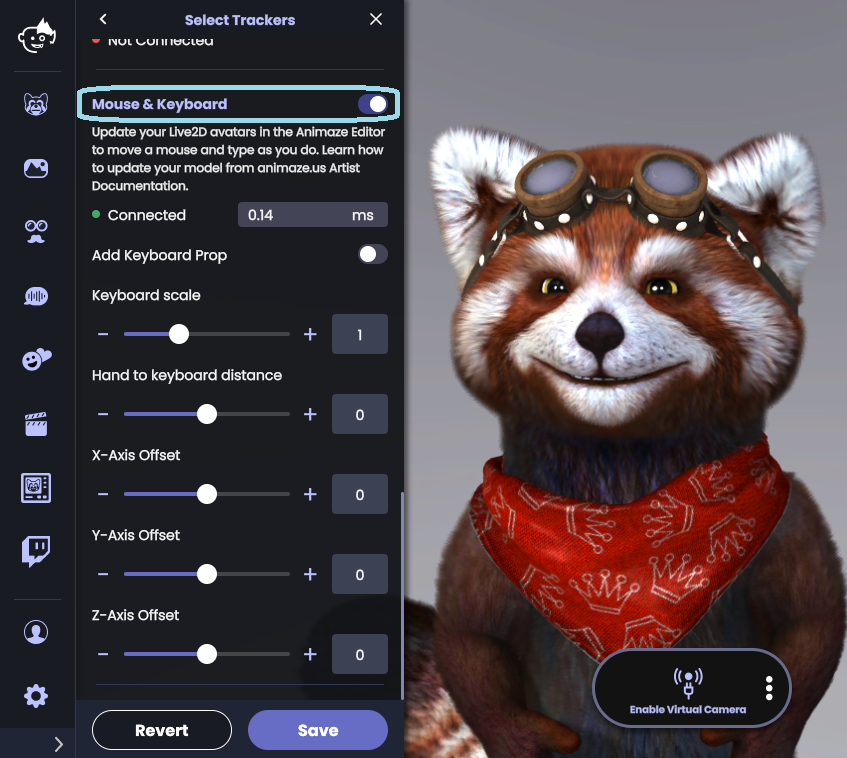
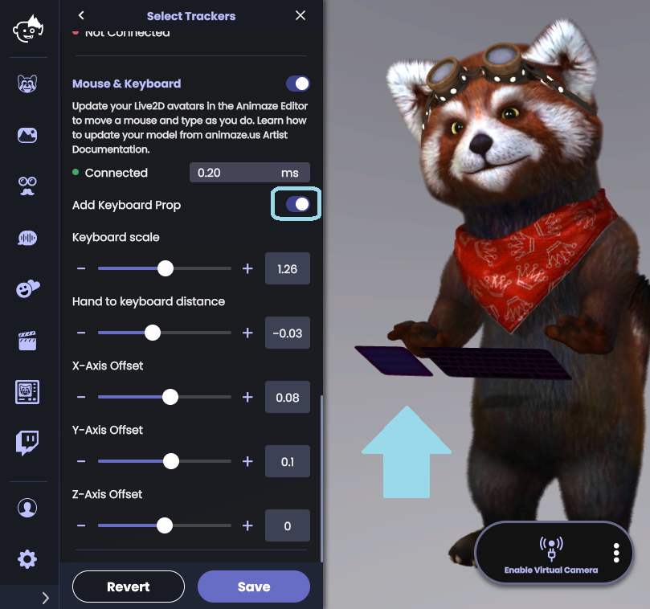

Animaze Desktop: How can I use the Mouse & Keyboard prop?
The Mouse & Keyboard addition to the Animaze app is different from the Gamepad controls feature.
The Mouse & Keyboard adds a prop to your avatar that emulates the look of a mouse and a keyboard, making the avatar look and move as if it were using a mouse and a keyboard. When you move your mouse, the avatar will emulate that look, and when you type at your keyboard, the avatar will emulate that look too. This feature works with 2D avatars as well. Update your 2D avatar in the Animaze Editor: https://www.animaze.us/manual/gettingstarted2d
Note: To use both iPhone tracking and Mouse & Keyboard at the same time, make sure you turn on the iPhone before Mouse & Keyboard
To enable this, you will need to go open the app and navigate to Animaze > Settings > Advanced Tracking Configuration > Overrides > toggle the button to turn on Mouse & Keyboard

Toggle Add Keyboard Prop ON to add the prop in the scene

The controls for Mouse & Keyboard prop are as follows:
a. Keyboard scale: changes the size of the prop
b. Hand to keyboard distance: changes the distance between the prop and the avatar’s hands
c. X-Axis Offset: moves the prop left or right on the X axis
d. Y-Axis Offset: moves the prop up and down on the Y axis
e. Z-Axis Offset: moves the prop forward and back on the Z axis